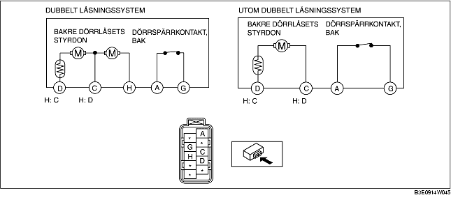

KONTROLL AV BAKRE DÖRRLÅSETS MEKANISM OCH STYRDON
B3E091458490W05
1. Följande styrdon och omkopplare är integrerade i bakre dörrlåsets mekanism och styrdon. Kontrollera bakre dörrlåsets mekanism och styrdon enligt varje kontroll av följande komponenter.
-
• Styrdon för bakre dörrlåset (Se KONTROLL AV BAKRE DÖRRLÅSETS STYRDON.)
-
• Dörrspärrkontakt, bakdörr (Se KONTROLL AV DÖRRSPÄRRKONTAKT, BAKDÖRR.)
